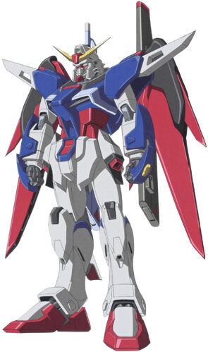

ZGMF-X42S Destiny Gundam
The ZGMF-X42S Destiny Gundam adalah tituler mobile suit dari Mobile Suit Gundam SEED Destiny dan dikemudikan oleh Shinn Asuka .
Versi Gunpla yang dibuat langsung dikemudikan oleh Shimon Izuna di Gundam Build Fighters Try .
ZGMF-X42S Destiny Gundam adalah MS tujuan umum berkinerja tinggi yang ditugaskan oleh Ketua ZAFT Gilbert Durandal , yang memerintahkannya untuk digabungkan dengan teknologi paling canggih saat itu, termasuk teknologi yang dilarang oleh Perjanjian Junius.
Berdasarkan ZGMF-X56S Impulse Gundam dan data tempur Shinn Asuka , ia dirancang untuk menangani situasi pertempuran apa pun dengan satu set persenjataan yang bervariasi, sebuah konsep yang pertama kali diuji pada ZGMF-X56S/θ Destiny Impulse .
Untuk pertempuran jarak dekat, ia memiliki dua bumerang balok yang berfungsi ganda sebagai pedang balok, sepasang meriam balok palem, dan pedang balok besar.
Untuk pertempuran jarak jauh, ia dilengkapi dengan meriam balok jarak jauh dan senapan balok. Untuk pertahanan, ia memasang perisai fisik kecil serta dua generator perisai sinar. Terakhir, setelan itu memiliki seperangkat standar CIWS.